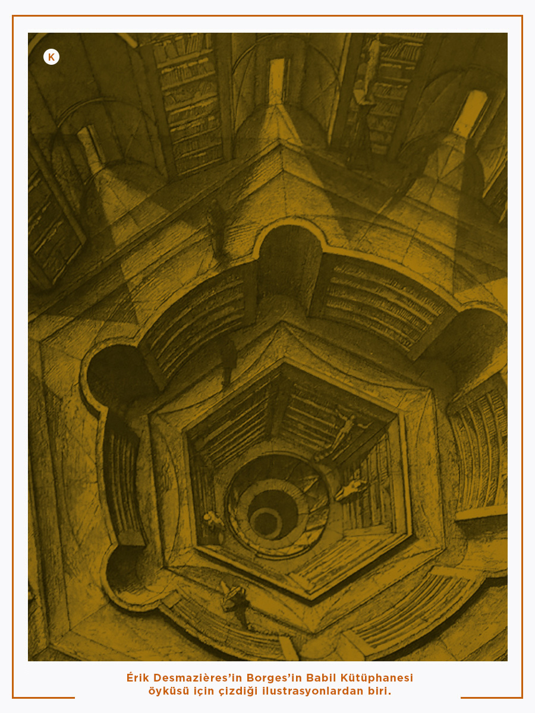

Borges'in Babil Kütüphanesi: Sonsuzluğun ve Anlamın Sınırlarında Bir Yolculuk
"Evren (başkalarının Kütüphane adını verdikleri), her biri altıgen biçiminde, sayısı belirsiz, belki de sonsuz sayıda galeriden oluşur." — Jorge Luis Borges, Babil Kütüphanesi
Hayal edin. Evren kadar büyük, belki de evrenin ta kendisi olan bir kütüphane. Bu kütüphane, yazılabilecek her şeyi içeriyor. Sadece yazılmış olanları değil, potansiyel olarak yazılabilecek her metni. William Shakespeare'in tüm eserleri, kanserin kesin tedavisi, hiç öğrenemediğiniz bir dilin en güzel şiiri, doğumunuzdan ölümünüze kadar hayatınızın birebir hikayesi... ve hatta bu hikayenin her olası alternatifi.
Bu baş döndürücü fikir, Arjantinli yazar Jorge Luis Borges'in 1941 tarihli kısa öyküsü "Babil Kütüphanesi"nin temelini oluşturur. Ancak bu sonsuz bilgi okyanusu bir ütopya değil, tam aksine, insan aklını zorlayan bir kaos ve anlamsızlık labirentidir. Gelin bu labirentin koridorlarında birlikte gezintiye çıkalım.
1. Sonsuzluğun Mimarisi: Kütüphane Nasıl Bir Yer?
Borges, kütüphaneyi son derece spesifik bir şekilde tasvir eder. Bu yapı, aklımızın alamayacağı bir büyüklüğü, düzenli ve tekrar eden birimlerle anlatarak onu bir nebze olsun anlaşılır kılmaya çalışır.
- Altıgen Galeriler: Kütüphane, birbirine bağlı, altıgen şeklindeki odalardan oluşur. Her odanın merkezinde, alt ve üst katlardaki galerilere uzanan büyük bir havalandırma boşluğu bulunur.
- Raflar ve Kitaplar: Her altıgen odanın dört duvarında beşer adet raf bulunur. Her rafta ise 32 adet, hepsi birbiriyle aynı formatta kitap yer alır.
- Tek Tip Kitaplar: Her kitap 410 sayfadır. Her sayfada 40 satır ve her satırda yaklaşık 80 karakter bulunur.

💡 İnteraktif Not: Kitapların Alfabesi Nedir? (Tıklayın)
Borges'in kütüphanesindeki kitaplar daha da temel bir kurala bağlıdır. Tüm kitaplar, sadece 25 karakter kullanılarak yazılmıştır:
- 22 harf
- Boşluk (space)
- Virgül (,)
- Nokta (.)
2. İçerik: Her Şey ve Hiçbir Şey
Kütüphanenin en akıl almaz özelliği içeriğidir. Sınırlı sayıda karakterin mümkün olan her kombinasyonunu içerdiği için, anlamlı her metin bu raflarda bir yerdedir.
Kütüphanede Bulabileceğiniz Bazı Şeyler: * Gelecekte yazılacak en iyi roman. * Bu makalenin harfi harfine aynısı. * Bu makalenin sadece tek bir harfi farklı olan versiyonu. * Adınızın ve en yakın arkadaşınızın adının yan yana milyonlarca kez tekrarlandığı bir kitap. * Evrenin tüm sırlarını açıklayan, mükemmel ve kusursuz bir kitap.
Ancak burada korkunç bir gerçek ortaya çıkar: Anlamlı her kitap için, neredeyse sonsuz sayıda anlamsız kitap vardır. Düşünün ki, bir kitap tamamen "axl" harflerinin tekrarından oluşuyor. Bir diğeri ise tamamen anlamsız ve rastgele harflerle dolu.
🤯 İnteraktif Kod Bloğu: Matematiksel Olarak Bu Ne Kadar Büyük? (Tıklayın)
Kütüphanenin büyüklüğünü anlamak için basit bir hesap yapalım.
- Her kitapta yaklaşık 1,312,000 karakterlik yer olduğunu varsayalım (410 sayfa * 40 satır * 80 karakter).
- Alfabemizde 25 farklı karakter var.
251,312,000
Bu sayı o kadar büyüktür ki, gözlemlenebilir evrendeki atomların sayısından (yaklaşık 1080) bile kıyaslanamayacak derecede fazladır. Yani, anlamlı bir kitap bulma olasılığınız, samanlıkta iğne aramaktan çok daha düşüktür. Neredeyse sıfırdır.
3. Kütüphanecilerin Umutsuzluğu ve Arayışı
Borges'in öyküsü, bu sonsuz labirentte yaşayan kütüphanecilerin psikolojisini de inceler. Bu insanlar, bilgiye bu kadar yakınken aynı zamanda ondan sonsuza dek uzak olmanın trajedisini yaşarlar. Bu durum, kütüphaneciler arasında farklı akımların doğmasına neden olur:
- Gezginler: Hayatlarını "Açıklamalar Kitabı" gibi özel ve anlamlı bir kitabı arayarak geçirirler. Genellikle umutsuzluk içinde ölürler.
- Arıtmacılar: Anlamsız ve "saçma" kitapları yok ederek kütüphaneyi "temizlemeye" çalışan bir grup. Ancak yok ettikleri her kitabın milyonlarca benzerinin başka galerilerde olduğunu fark etmezler.
- "Kitabın Adamı" Tarikatı: Bir galeride, kütüphanenin tüm sırlarını özetleyen ve diğer tüm kitapların bir nevi anahtarı olan bir adamın yaşadığına inananlar.
"Şu kesindi: Raflarda bulunan onca anlamsız kitabın arasında bir tane, en azından bir tane akla uygun kitap vardı. Ve bu kitabın varlığına olan inanç hiç yitirilmedi."
4. Babil Kütüphanesi ve Modern Bilim
Borges'in bu edebi fantezisi, şaşırtıcı bir şekilde modern bilimin bazı alanlarıyla paralellikler gösterir.
- Genetik ve DNA: DNA'mız, sadece dört harften (A, T, C, G) oluşan bir alfabeyle yazılmış devasa bir kitaptır. Bu harflerin kombinasyonları canlılığı oluştururken, anlamsız veya hatalı dizilimler hastalıklara yol açar. Tıpkı kütüphanedeki gibi, anlamlı bir "gen" dizilimi, devasa bir genetik "gürültü" içinde yer alır.
- Kozmoloji ve Çoklu Evrenler: Bazı teoriler, evrenimizin sonsuz sayıda evrenden sadece biri olduğunu öne sürer. Bu evrenlerde, fizik yasalarının farklı kombinasyonları mevcuttur; birçoğu yaşama elverişsiz (anlamsız), çok azı ise bizimki gibi yaşama izin veren (anlamlı) bir yapıdadır.
- Bilgi Teorisi: Kütüphane, "bilgi" ve "veri" arasındaki farkın mükemmel bir metaforudur. Raflar sonsuz miktarda veri ile doludur, ancak bilgi (yani anlamlı ve kullanılabilir veri) son derece nadirdir.
5. Sonsuzluk Labirentinden Çıkış Var mı?
Borges, öyküsünün sonunda okura rahatlatıcı ama aynı zamanda derin bir düşünce sunar. Kütüphane sonsuz olabilir, ama aynı zamanda periyodiktir. Yani, yeterince uzun bir süre sonra, aynı kitaplar ve aynı galeriler tekrar etmeye başlar.
"Kütüphane sınırsızdır ve dönemseldir. Eğer sonsuz bir gezgin onu herhangi bir yönde katederse, yüzyıllar sonra aynı ciltlerin aynı düzensizlik içinde tekrarlandığını (ve tekrarlandıktan sonra da düzenin düzensizlik olacağını) kanıtlayabilecektir: Benim güzel umudum."
Bu, anlamsızlığın içinde bile bir tür düzenin, bir tekrarın olduğu umududur.
✨ Ek Bilgi: Dijital Babil Kütüphaneleri (Tıklayın)
Borges'in bu fikrinden ilham alan programcılar, dijital Babil Kütüphaneleri yaratmışlardır. Bu web siteleri, bir algoritma kullanarak, siz bir metin girdiğinizde o metnin kütüphanenin hangi rafında, hangi cildinde ve hangi sayfasında "zaten var olduğunu" size gösterir. Bu, Borges'in soyut konseptini deneyimlemenin en ilginç yollarından biridir. Merak ediyorsanız libraryofbabel.info sitesini ziyaret edebilirsiniz.
Sonuç olarak, Babil Kütüphanesi fiziksel bir yerden çok, insanlığın bilgi, anlam ve düzen arayışının güçlü bir alegorisidir. Bize, sınırsız potansiyel ve veri çağında, asıl zorluğun bilgiye ulaşmak değil, o bilgiyi kaostan ayıklayıp anlamlı hale getirmek olduğunu hatırlatır. Belki de anlam, kütüphanenin raflarında hazır bulunmaz; onu arama eyleminde, o anlamsız harf dizilerinden kendi hikayemizi yaratma cesaretinde gizlidir.